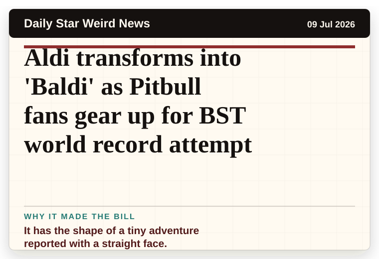
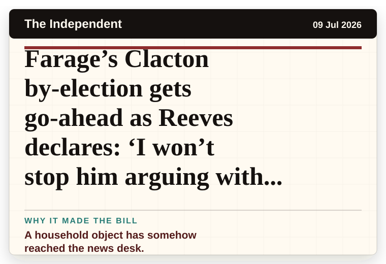
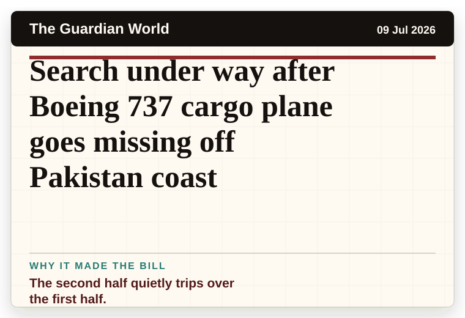
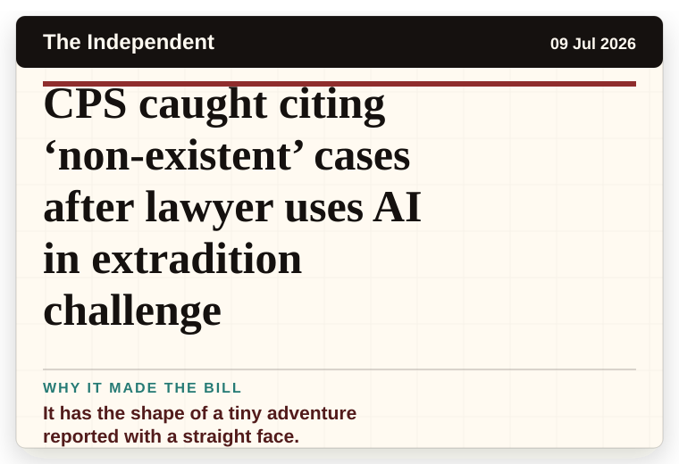
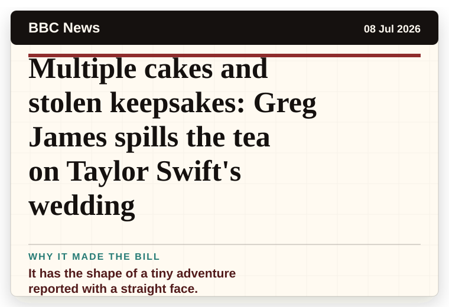
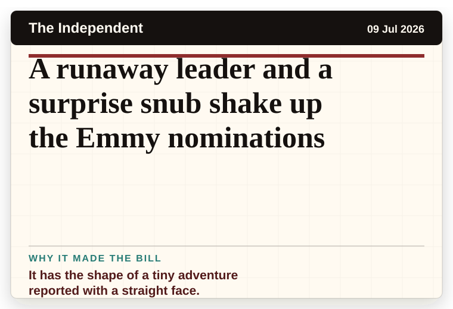
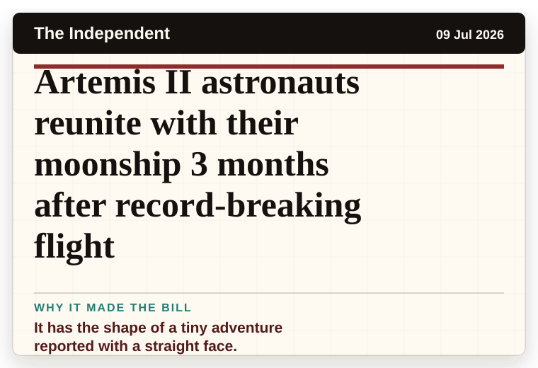

NT News
Australia
Greg Olsen reveals which starry guest liked his hat at Taylor Swift and Travis Kelce's wedding
A household object has somehow reached the news desk.
The latest daily picks, linked back to the original sources. Search the room, pick a source, or follow a headline out to the full story.
Record updated: 09 Jul 2026, 07:54 AM AEST
Showing 18 headline candidates from the refresh run completed on 09 Jul 2026, 07:54 AM AEST.
A household object has somehow reached the news desk.

The headline is already trying not to laugh.

A wonderfully specific detail has taken centre stage.

The word chaos gives it open-mic energy.

A mystery is doing a lot of work in a very small sentence.

It has the shape of a tiny adventure reported with a straight face.

It has the shape of a tiny adventure reported with a straight face.

A mystery is doing a lot of work in a very small sentence.

A mystery is doing a lot of work in a very small sentence.

A mystery is doing a lot of work in a very small sentence.

A household object has somehow reached the news desk.

The scale is doing deadpan comedy.

The second half quietly trips over the first half.

It has the shape of a tiny adventure reported with a straight face.

It has the shape of a tiny adventure reported with a straight face.

It has the shape of a tiny adventure reported with a straight face.

It has the shape of a tiny adventure reported with a straight face.
It has the shape of a tiny adventure reported with a straight face.